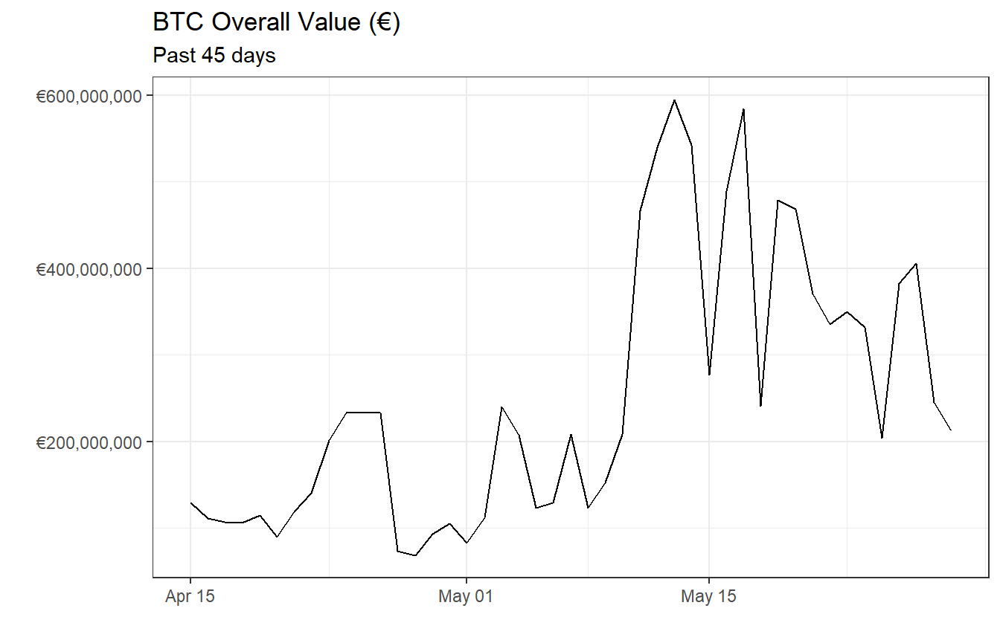

eur and eurusds Functionsmy-vignette.RmdLoad necessary libraries.
Use function binancer::binance_klines to get the data for bitcoin prices in the last 45 days.
# Getting data
coin_prices <- binance_klines('BTCUSDT', interval = '1d', limit = 45)
coin_prices[, date := as.Date(close_time)]
coin_prices <- coin_prices[, .(btcusd_price = close, date, volume)]
head(coin_prices)
#> btcusd_price date volume
#> 1: 5024.95 2019-04-15 29057.19
#> 2: 5173.72 2019-04-16 24242.23
#> 3: 5202.82 2019-04-17 23307.54
#> 4: 5258.44 2019-04-18 22619.24
#> 5: 5258.68 2019-04-19 24611.24
#> 6: 5291.73 2019-04-20 19168.91
dim(coin_prices)
#> [1] 45 3
# Set key for further merge
setkey(coin_prices, date)The dataset has last 45 days of bitcoin prices in $ and volume.
Use function foRex::eurusds to get exchange rates $ to €, for the range of dates we are interested on (in this case the last 45 days).
earliest_date <- min(coin_prices$date)
latest_date <- max(coin_prices$date)
# get exchange rates
exchange_rates <- eurusds(earliest_date, latest_date)
head(exchange_rates)
#> date usdeur
#> 1: 2019-05-16 0.8926180
#> 2: 2019-04-25 0.8990380
#> 3: 2019-05-13 0.8892841
#> 4: 2019-05-20 0.8954957
#> 5: 2019-04-30 0.8914245
#> 6: 2019-05-07 0.8940545
dim(exchange_rates)
#> [1] 30 2
# Set key for further merge
setkey(exchange_rates, date)Exchange rates are not available for weekends and holidays, this explains the dataset with only 29 exchange rates instead of 45. The missing values will be imputed with the latest exchange rates available.
coin_prices <- exchange_rates[coin_prices, roll = TRUE]
head(coin_prices)
#> date usdeur btcusd_price volume
#> 1: 2019-04-15 0.8839388 5024.95 29057.19
#> 2: 2019-04-16 0.8845644 5173.72 24242.23
#> 3: 2019-04-17 0.8848774 5202.82 23307.54
#> 4: 2019-04-18 0.8888889 5258.44 22619.24
#> 5: 2019-04-19 0.8888889 5258.68 24611.24
#> 6: 2019-04-20 0.8888889 5291.73 19168.91The overall value of the bitcoin (in EUR) is calculated like below.
coin_prices <- coin_prices[, value_eur := usdeur*btcusd_price*volume]
head(coin_prices)
#> date usdeur btcusd_price volume value_eur
#> 1: 2019-04-15 0.8839388 5024.95 29057.19 129064735
#> 2: 2019-04-16 0.8845644 5173.72 24242.23 110944279
#> 3: 2019-04-17 0.8848774 5202.82 23307.54 107304588
#> 4: 2019-04-18 0.8888889 5258.44 22619.24 105726143
#> 5: 2019-04-19 0.8888889 5258.68 24611.24 115042326
#> 6: 2019-04-20 0.8888889 5291.73 19168.91 90165944Below you can see the overall value of bitcoin in EUR for the past 45 days.
Use function foRex::eur to format the y-axis values.
ggplot(coin_prices, aes(date, value_eur)) + geom_line() +
theme_bw() +
scale_y_continuous(labels = eur) + labs(title = "BTC Overall Value (€)",
subtitle = "Past 45 days",
x = " ",
y = "")